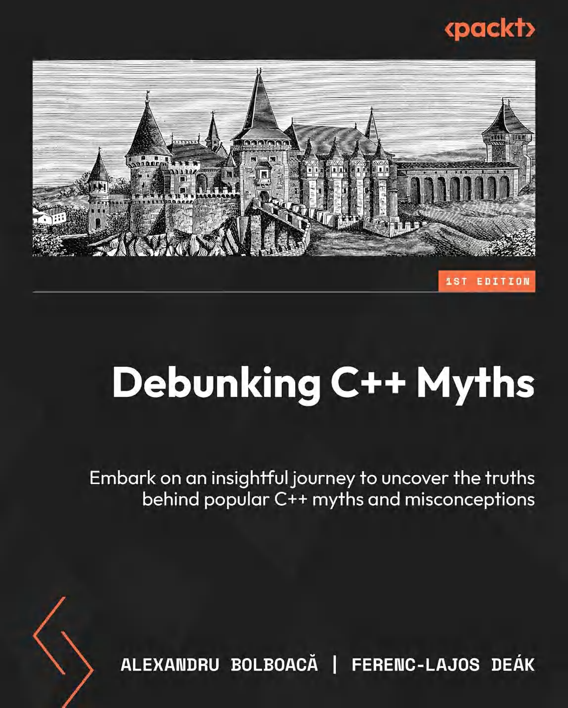

走出C++谜云
揭开C++的真相与误解
作者：Alexandru Bolboacă，Ferenc-Lajos Deák
译者：陈晓伟

目录
致谢
关于作者
关于评审
前言
第1章 C++的学习困境
1.1. 环境要求
1.2. 为什么难学
1.3. C++ 的难点
1.4. Stroustrup学习法
1.5. Kate Gregory --- 不要教授C语言
1.6. 测试驱动学习法
1.7. 能力越大，责任越大
1.8. 总结
第2章 理想与现实：C++程序的边界
2.1. 环境要求
2.2. 加纳的偏远一隅
2.3. 微软的 C++
2.4. 自由的编译器
2.5. 头文件不符合C++规范时
2.6. 鲜为人知的那些事
2.7. 未来之路
2.8. 总结
第3章 范式之争：C++的多面性
3.1. 环境要求
3.2. 多面性
3.3. 函数式编程
3.4. 元编程
3.5. 强类型的极限
3.6. 忽略类型
3.7. 总结
第4章 程序入口：表象之下的复杂性
4.1. main()函数
4.2. 企鹅(Linux)农场
4.3. 打开天窗
4.4. 总结
第5章 C++类内秩序的美学
5.1. 大小很重要
5.2. 尊重顺序
5.3. 思考顺序
5.4. 黑暗法则
5.5. 去序从简
5.6. 总结
第6章 内存安全的挑战
6.1. 环境要求
6.2. 内存安全很重要
6.3. 旧C++的内存安全问题
6.4. 现代C++的救赎
6.5. 现代C++的局限性
6.6. 仍需努力
6.7. 总结
第7章 并发的艺术与实践
7.1. 环境要求
7.2. 并行和并发的定义
7.3. 并行和并发的常见问题
7.4. 函数式编程的救援
7.5. Actor模型
7.6. 我们的能力边界
7.7. 总结
第8章 极致性能：内联汇编
8.1. 点亮像素
8.2. 数字宇宙之和
8.3. 单指令霸权
8.4. 总结
第9章 C++的另类美学
9.1. 追求美
9.2. 零的定义
9.3. 关于括号
9.4. 趣谈
9.5. 总结
第10章 缺乏现代库生态的困境
10.1. 何以见得？
10.2. 现代开发者的真知
10.3. 共同的需要
10.4. 兼容性
10.5. 供应链安全
10.6. 总结
第11章 兼容性的双刃
11.1. C与C++的兼容方向
11.2. 空格：从必须到无视
11.3. auto的惊喜
11.4. 总结
第12章 Rust将取代C++
12.1. 环境要求
12.2. 为什么要竞争？
12.3. Rust的特性
12.4. Rust的优势
12.5. C++哪些方面更优秀
12.6. 为什么仍然需要C++
12.7. 总结